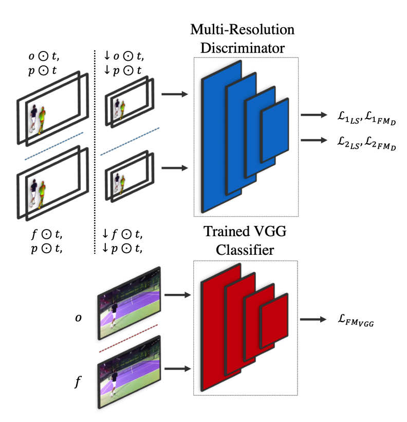
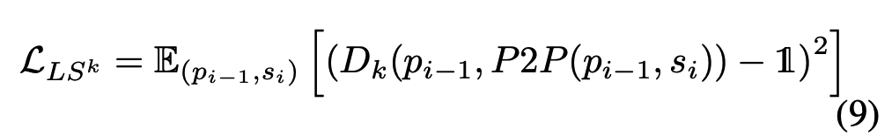
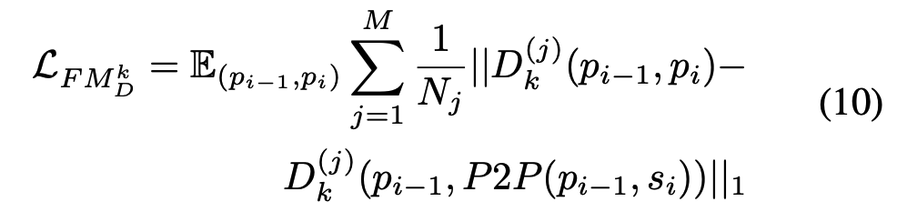
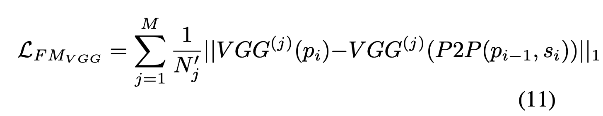
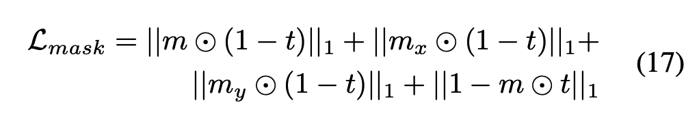
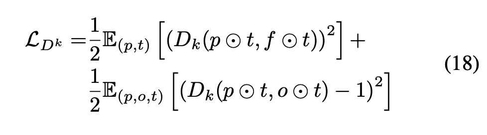
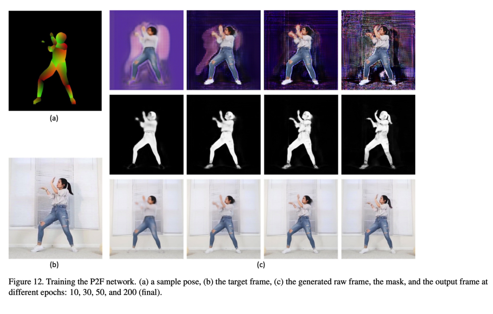
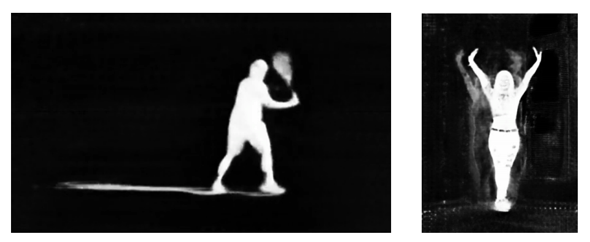

Paper aims to learn a controllable model of a person, given a training video of the person performing a certain activity.
Method
- Controllable character => Generating new frame based on previous pose, current control signal
- Uses work from DensePose to extract 3D pose from video frames
- Uses GAN's to generate new frame based on 3D pose, provided control signal
- Pose2Pose Network - Predicts next pose based on current pose, control signal
- Pose2Frame Network - Takes current, previous pose, background and outputs final frame
- Architectures for both have been inspired from Pix2PixHD to generate a quality high resolution output
Pose2Pose Network
- Autoencoder style Generator Network
- Blocks in the latent space are conditioned on the control signal
- During training the difference in Center of Mass is take as control signal
Pose2Frame Network
- Generator Network, outputs a raw frame and also a mask
- The final frame is contructed as 'sticking' generated person from raw frame to background using the mask
Discriminator
- Role is to distinguish the actual images from the ones generated by the generator
- Outputs class probability of the o/p from generator belonging to the GT distribution
- Evaluated at multiple resolutions to improve results
- Apart from the discriminator loss, additional feature matching component(activation o/p's from VGG) to ensure closeness of generated frame to GT frame
- 't' is a binary mask to filter person from frame

Multi resolution Discriminator used to train the Generator networks, 'perception loss' component from the VGG network
Loss Functions
- Discriminator: Discriminate output from P2P vs GT, force discriminator output to 0 for P2P, 1 for GT
- Generator: Fool discriminator, claim outputs belong to GT disctribution
- Generator tries to minimize difference in discriminator network activations of its output vs GT
- Additional Feature Matching loss(VGG) has been added to generator to make outputs realistic, learn shadows, reflections








P2F, Discriminator Loss
Training

Blending Results

Mask contains information about shadows, reflections, helps blend into different backgrounds